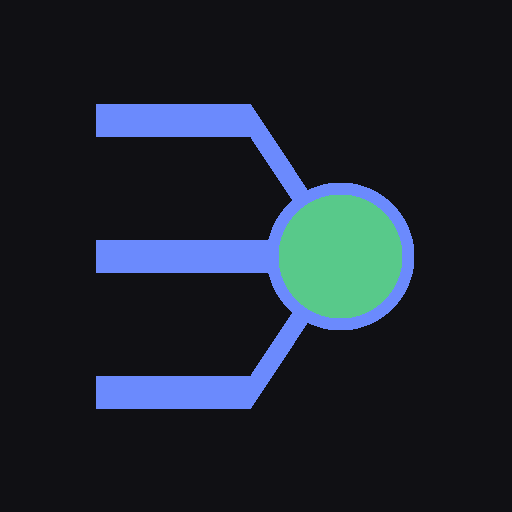

Todas as suas IAs — locais, de API e de linha de comando — com uma memória só.
O que você contou pro Claude, o GPT lembra na próxima conversa. A memória é um banco único, lido e escrito por qualquer modelo.
Ollama, LM Studio, llama.cpp, vLLM e qualquer endpoint compatível com OpenAI — encontrados sozinhos na sua máquina.
Anthropic, OpenAI, Gemini, Groq, DeepSeek, OpenRouter, xAI e Mistral. A chave fica no seu servidor.
Claude Code, Codex, OpenCode — ou qualquer binário que aceite um prompt.
Busca híbrida FTS5 + embeddings, escrita automática depois de cada resposta, fatos fixados e importação de outras IAs.
O mesmo prompt em vários modelos ao mesmo tempo: compare lado a lado, peça uma síntese, ou deixe que eles se avaliem em votação cega.
Anexe texto, código, PDF, DOCX, PPTX ou EPUB. O trecho relevante entra na resposta com o nome do arquivo citado.
Busca na web dentro da conversa, e pesquisa profunda que lê várias páginas e escreve um relatório com as fontes numeradas. Sem chave de API.
Personalidade, modelo preferido, temperatura, escopo de memória e diretório de trabalho para o modo coding.
Roda no seu computador, abre no navegador e instala como app no celular pela rede local.
Precisa de Node 22.5 ou mais novo. Não há dependência para instalar.
git clone https://github.com/NspxMiguel/IAUnifier.git
cd IAUnifier
node bin/iaunifier.mjsO servidor imprime o endereço local e o da rede, já com o token de acesso. Abrir o endereço de rede no celular e usar "Adicionar à Tela de Início" instala como app.
| Opção | Efeito |
|---|---|
--port 4747 | troca a porta |
--host 0.0.0.0 | troca o endereço de escuta |
--token | imprime o token e sai |
--no-token | desliga o token (só em rede confiável) |
Tudo em ~/.iaunifier: o banco SQLite e a configuração, criada
com permissão 600. Chave de API fica gravada ali e nunca sai do servidor —
a interface só sabe se existe chave, nunca o valor.